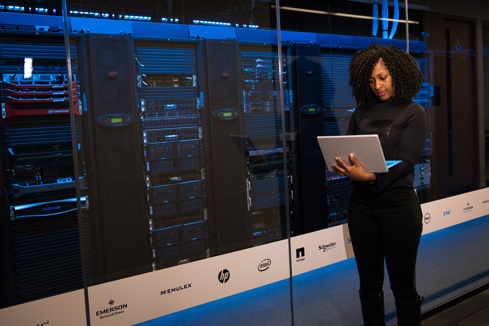

IT Strategy & Digital Transformation
- IT Roadmap Development: Mapping long-term technology investments to overall business growth goals.
- Digital Transformation Advisory: Transitioning manual or legacy processes into modern digital workflows.
- Enterprise Architecture Planning: Designing the foundational blueprint for an organization's applications, data, and infrastructure.
- Technology Assessment: Auditing current software and hardware to identify inefficiencies, bottlenecks, and hidden costs.

Cybersecurity & Compliance
- Vulnerability Assessments: Scanning networks and applications to find security gaps before hackers do.
- Penetration Testing: Simulating real-world cyberattacks to test the strength of active defenses.
- Compliance Auditing: Ensuring IT systems meet legal frameworks like GDPR, HIPAA, PCI-DSS, or local data protection acts.
- Disaster Recovery Planning: Creating business continuity plans and backup strategies for ransom incidents or system failures.
Cloud & Infrastructure Services
- Cloud Migration Strategy: Planning the shift from on-premise servers to cloud environments like AWS, Microsoft Azure, or Google Cloud.
- Cloud Optimization: Redesigning cloud setups to lower monthly hosting bills and improve performance.
- Network Design & Setup: Structuring local office networks, Wi-Fi architectures, firewalls, and secure VPNs for remote work.
- Network Design & Setup: Structuring local office networks, Wi-Fi architectures, firewalls, and secure VPNs for remote work.

Software, Data & Integrations
- System Integration: Linking separate platforms—like your ERP, CRM, and inventory tools—so data flows smoothly between them.
- Software Procurement Advisory: Helping businesses evaluate vendor proposals and decide whether to build custom software or buy off-the-shelf products.
- Data Analytics & BI: Building data pipelines, data warehouses, and custom dashboards for executive business intelligence.
- Database Architecture Optimization: Repairing slow database queries, structural issues, and scaling bottlenecks.
IT Management & Leadership
- Fractional CTO Services: Providing part-time, executive-level technical leadership for companies that don't need a full-time Chief Technology Officer.
- Project Recovery & Management: Stepping in to manage delayed, over-budget, or failing tech projects using Agile, Scrum, or Waterfall methods.
- IT Governance: Designing corporate policies regarding company device usage, software downloads, and internal tech support workflows.
- Vendor & SLA Management: Negotiating contracts and managing third-party software providers to ensure they meet their service level agreements.